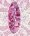

|
| For part 2 of my
assignment I made this web set from a lace tube I had.I applied drop shadow
to the lace and then Blade Pro to get the jewel effect..which I also used
on the buttons.I used this set as an index for my poems page.and this button
as the link to my poems.

|
|